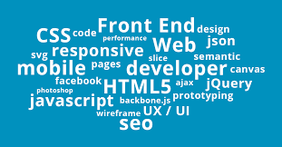

You may may be surprised to find out that the first question an interviewer will ask you won't be about your credentials or where you went to school. Instead, you'll be asked to show off what you have built.
The way to distinguish yourself and become a full-time Front-End Web Developer is to prove that you can build fantastic experiences that people love. Build websites that delight your users! Try new technologies! Show off your work to the world!
An awesome portfolio of work will help you stand out from the crowd and get the job you want—regardless of where you went to school.
